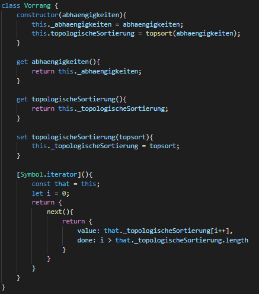
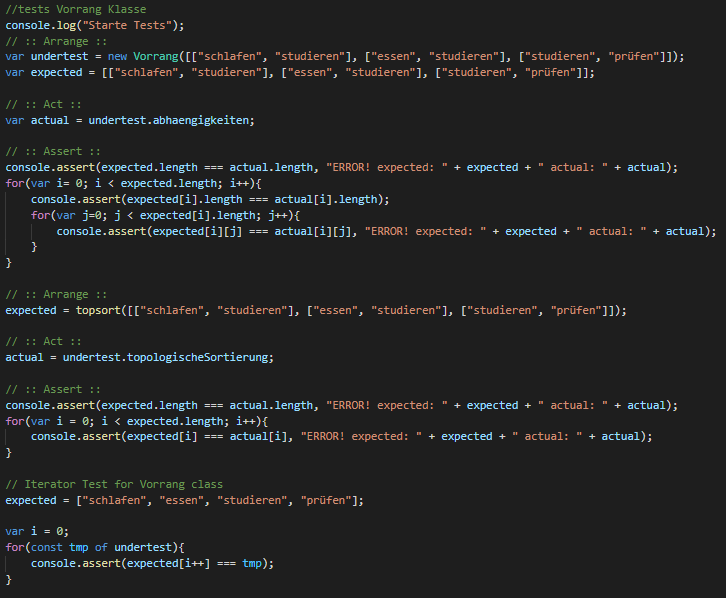

Topologische Iterierbarkeit
Stellen Sie bei Ihrer Klasse aus der letzten Aufgabe die topologische Iterierbarkeit her (zunaechst ueber das Iterationsprotokoll, ohne Generator, ohne yield).
Implementierung:
Tests:

Stellen Sie bei Ihrer Klasse aus der letzten Aufgabe die topologische Iterierbarkeit her (zunaechst ueber das Iterationsprotokoll, ohne Generator, ohne yield).
Implementierung: